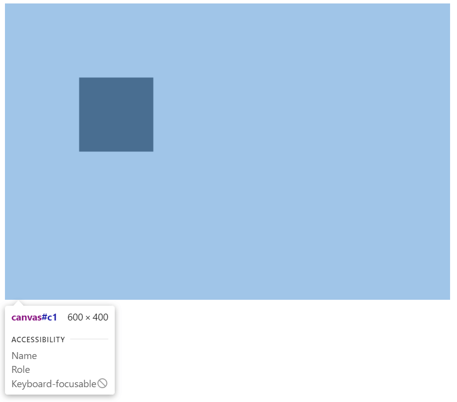
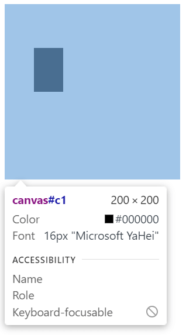
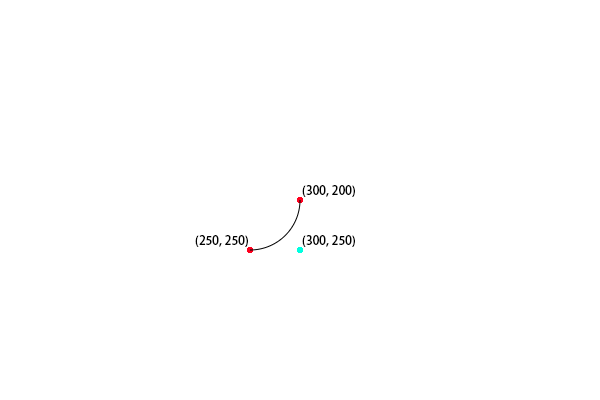
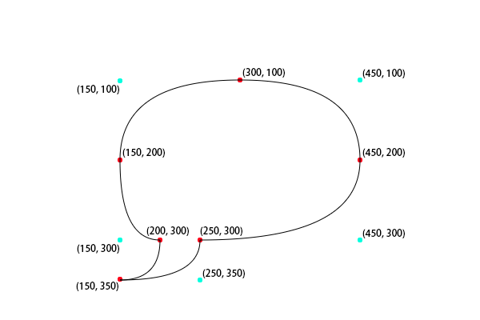
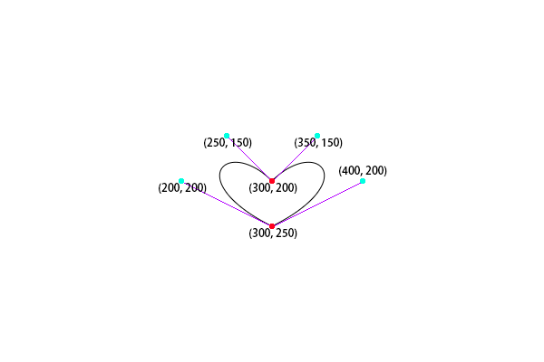
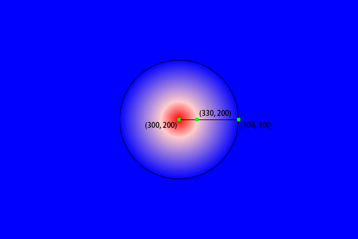
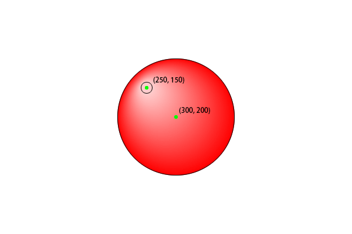

Web-Html Canvas
资源
01-初识 Canvas
创建一个 canvas：
<canvas id="c" width="600" height="400"></canvas>
|
一个 canvas 画布一般包含三要素：
id: 标识元素的唯一性
width: 画布的宽度
height: 画布的高度
在 Canvas 上画画：
var c = document.getElementById('c')
|
var ctx = c1.getContext('2d');
|
- 绘制矩形：
fillRect (位置 x, 位置 y, 宽度, 高度）
ctx.fillRect(100, 100, 100, 100);
|
完整代码：
<!DOCTYPE html>
<html lang="en">
<head>
<meta charset="UTF-8">
<meta name="viewport" content="width=device-width, initial-scale=1.0">
<title>Document</title>
</head>
<body>
<canvas id="c" width="600" height="400"></canvas>
<script>
var c = document.getElementById('c')
var ctx = c1.getContext('2d');
ctx.fillRect(100, 100, 100, 100);
</script>
</body>
</html>
|
最终效果：

02-canvas上下文对象与浏览器支持
对于不适应 canvas 的浏览器，c.getContext 将会返回空，可以输出提示信息：
if(!c.getContext)
{
console.log("当前浏览器不支持 canvas，请下载最新的浏览器");
}
|
如果不适应 canvas，canvas 里的内容就不会被覆盖，就可以操作一番：
<canvas id="c" width="600" height="400">
当前浏览器不支持 canvas，请下载最新的浏览器
<a href="https://www.google.cn/chrome/index.html">立即下载</a>
</canvas>
|
画笔有很多属性，console.log(ctx); 输出它们：

完整代码：
<!DOCTYPE html>
<html lang="en">
<head>
<meta charset="UTF-8">
<meta name="viewport" content="width=device-width, initial-scale=1.0">
<title>Document</title>
</head>
<body>
<canvas id="c" width="600" height="400">
当前浏览器不支持 canvas，请下载最新的浏览器
<a href="https://www.google.cn/chrome/index.html">立即下载</a>
</canvas>
<script>
var c = document.getElementById('c')
if(!c.getContext)
{
console.log("当前浏览器不支持 canvas，请下载最新的浏览器");
}
var ctx = c1.getContext('2d');
console.log(ctx);
ctx.fillRect(100, 100, 100, 100);
</script>
</body>
</html>
|
03-Canvas填充与路径绘制
在 canvas 中，如果 style 属性设置了大小，则这个画布在网页上的最终显示将会进行拉伸变换。（但是一般是设置相同的）
<canvas id="c" width="600" height="400" style="width: 200px; height: 200px;"></canvas>
|

之前使用 ctx.fillRect() 会生成自带填充的矩形，而使用 ctx.strokeRect() 则会以路径形式绘制矩形。
strokeRect(x1, y1, 矩形宽度，矩形高度)
x1 为矩形左上角的点到画布左上角 x 轴的距离y1 为矩形左上角的点到画布左上角 y 轴的距离
ctx.strokeRect(100, 200, 200, 100);
|

清除画布范围内的矩形：
ctx.clearRect(0, 0, c1.clientWidth, c1.clientHeight);
|
使用 setInterval()来完成清除的动画。（感觉语法有点像 DOTween）
ctx.strokeRect(100, 200, 200, 100);
ctx.fillRect(200, 150, 200, 100);
let height = 0;
let t1 = setInterval(() => {
height++;
ctx.clearRect(0, 0, c1.clientWidth, height);
if (height > c1.clientHeight)
{
clearInterval(t1);
}
}, 10);
|
定义矩形，但不绘制：
ctx.rect(100, 200, 300, 300);
|
填充所定义的矩形：
描边所定义的矩形：
ctx.beginPath(); 和 ctx.closePath(); 分别表示提笔和抬笔操作，这样绘制的时候不会覆盖之前定义的图形。（有种 Windows 程序设计的味道）
ctx.beginPath();
ctx.rect(200, 150, 200, 100);
ctx.stroke();
ctx.closePath();
ctx.beginPath();
ctx.rect(100, 200, 200, 100);
ctx.fill();
ctx.closePath();
|
04-canvas绘制圆弧与笑脸
- arc 是绘制圆弧的方法。
- ctx.arc(圆心x, 圆心y, 半径, 开始的角度, 结束的角度, 逆时针（true）还是顺时针（false）);
ctx.arc(300, 200, 50, 0, Math.PI / 4);
ctx.stroke();
|
使用圆弧工具绘制一个笑脸，记得要分别使用 ctx.beginPath(); 和 ctx.closePath(); 提笔和抬笔，不然路径会相连。
ctx.beginPath();
ctx.arc(75, 75, 50, 0, Math.PI * 2);
ctx.stroke();
ctx.closePath();
ctx.beginPath();
ctx.arc(75, 75, 35, 0, Math.PI);
ctx.stroke();
ctx.closePath();
ctx.beginPath();
ctx.arc(60, 65, 5, 0, Math.PI * 2);
ctx.stroke();
ctx.closePath();
ctx.beginPath();
ctx.arc(90, 65, 5, 0, Math.PI * 2);
ctx.stroke();
ctx.closePath();
|
上述方法代码太繁琐，改用 moveTo 来移动点。
ctx.beginPath();
ctx.arc(75, 75, 50, 0, Math.PI * 2);
ctx.moveTo(110, 75);
ctx.arc(75, 75, 35, 0, Math.PI);
ctx.moveTo(65, 65);
ctx.arc(60, 65, 5, 0, Math.PI * 2);
ctx.moveTo(95, 65);
ctx.arc(90, 65, 5, 0, Math.PI * 2);
ctx.stroke();
ctx.closePath();
|
最终效果：
05-绘制折线线段
ctx.moveTo(300, 200);
ctx.lineTo(350, 250);
|
将画笔移动到 (300, 200)，然后划线至 (350, 250)。
范例：
ctx.beginPath();
ctx.moveTo(300, 200);
ctx.lineTo(350, 250);
ctx.lineTo(350, 200);
ctx.lineTo(300, 200);
ctx.stroke();
ctx.closePath();
ctx.beginPath();
ctx.moveTo(200, 100);
ctx.lineTo(250, 150);
ctx.lineTo(250, 100);
ctx.lineTo(200, 100);
ctx.fill();
ctx.closePath();
|
最终效果：
06-actTo绘制圆弧方式

ctx.beginPath();
ctx.moveTo(300, 200);
ctx.arcTo(300, 250, 250, 250, 50);
ctx.stroke();
ctx.closePath();
|

07-二次贝塞尔曲线实现聊天气泡框
使用 ctx.quadraticCurveTo() 可以绘制二次贝塞尔曲线。

- 开始点：moveTo(
20,20)
- 控制点：quadraticCurveTo(
20,100,200,20)
- 结束点：quadraticCurveTo(20,100,
200,20)
使用二次贝塞尔曲线画一个聊天气泡框：
ctx.beginPath();
ctx.moveTo(200, 300);
ctx.quadraticCurveTo(150, 300, 150, 200);
ctx.quadraticCurveTo(150, 100, 300, 100);
ctx.quadraticCurveTo(450, 100, 450, 200);
ctx.quadraticCurveTo(450, 300, 250, 300);
ctx.quadraticCurveTo(250, 350, 150, 350);
ctx.quadraticCurveTo(200, 350, 200, 300);
ctx.stroke();
ctx.closePath();
|

08-三次贝塞尔曲线实现献给朋友的爱心
代码：
ctx.beginPath();
ctx.moveTo(300, 200);
ctx.bezierCurveTo(350, 150, 400, 200, 300, 250);
ctx.bezierCurveTo(200, 200, 250, 150, 300, 200);
ctx.stroke();
ctx.closePath();
|

09-封装路径Path2d
将之前所画的心形封装成一个路径：
var heartPath = new Path2D();
heartPath.moveTo(300, 200);
heartPath.bezierCurveTo(350, 150, 400, 200, 300, 250);
heartPath.bezierCurveTo(200, 200, 250, 150, 300, 200);
ctx.stroke(heartPath);
|
或是使用 svg 字符串创建一个路径：
var polyline = new Path2D("M10 10 h 80 v 80 h -80 z");
ctx.stroke(polyline);
|
最终效果：
10-颜色样式控制
ctx.strokeStyle = "" 和 ctx.fillStyle = "" 分别设置描边和填充样式。
”red“预设颜色。"#ff00ff" 16 进制颜色。rgb(255, 0, 0) RGB 颜色。rgba(200, 200, 255) RGBA 颜色。
ctx.globalAlpha = 0.5; 设置全局透明度。
演示效果：
11-线型渐变和径向渐变
线性渐变：
let lineGradient = ctx.createLinearGradient(100, 200, 400, 500);
lineGradient.addColorStop(0, "red");
lineGradient.addColorStop(0.3, "#ffcccc");
lineGradient.addColorStop(1, "blue");
ctx.fillStyle = lineGradient;
ctx.fillRect(100, 200, 300, 300);
|

线性渐变动画：
let index = 0;
function render()
{
ctx.clearRect(0, 0, 600, 400);
index += 0.01;
if (index > 1)
{
index = 0;
}
let linearGradient = ctx.createLinearGradient(100, 200, 400, 500);
linearGradient.addColorStop(0, "red");
linearGradient.addColorStop(index, "#ffcccc");
linearGradient.addColorStop(1, "blue");
ctx.fillStyle = linearGradient;
ctx.fillRect(100, 200, 300, 300);
requestAnimationFrame(render);
}
requestAnimationFrame(render);
|
径向渐变：
let radiaGradient = ctx.createRadialGradient(300, 200, 0, 300, 200, 100);
radiaGradient.addColorStop(0, "red");
radiaGradient.addColorStop(0.3, "#ffcccc");
radiaGradient.addColorStop(1, "blue");
ctx.fillStyle = radiaGradient;
ctx.fillRect(0, 0, 600, 400);
|

径向渐变画个球：
let radiaGradient = ctx.createRadialGradient(250, 150, 10, 300, 200, 100);
radiaGradient.addColorStop(0, "#ffcccc");
radiaGradient.addColorStop(1, "red");
ctx.fillStyle = radiaGradient;
ctx.arc(300, 200, 100, 0, Math.PI * 2);
ctx.fill();
|

12-圆锥渐变特效
圆锥渐变，用的比较少。
let coneGradient = ctx.createConicGradient(Math.PI / 4, 300, 200);
coneGradient.addColorStop(0, "red");
coneGradient.addColorStop(0.5, "yellow");
coneGradient.addColorStop(1, "blue");
ctx.fillStyle = coneGradient;
ctx.fillRect(0, 0, 600, 400);
|
13-pattern印章填充样式
var img = new Image();
img.src = "./imgs/money.png"
img.onload = function(){
var pattern = ctx.createPattern(img, "repeat");
ctx.fillStyle = pattern;
ctx.fillRect(0, 0, 600, 400);
}
|